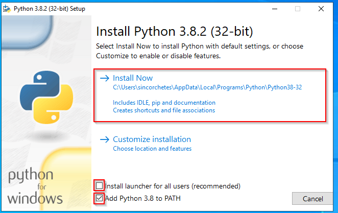
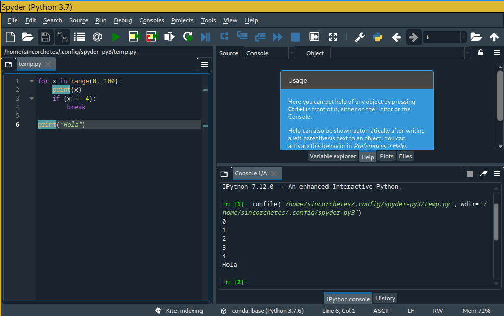
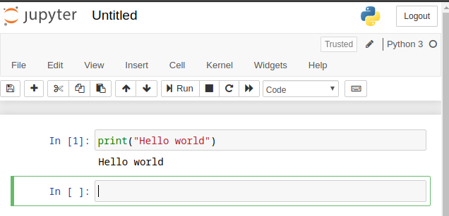
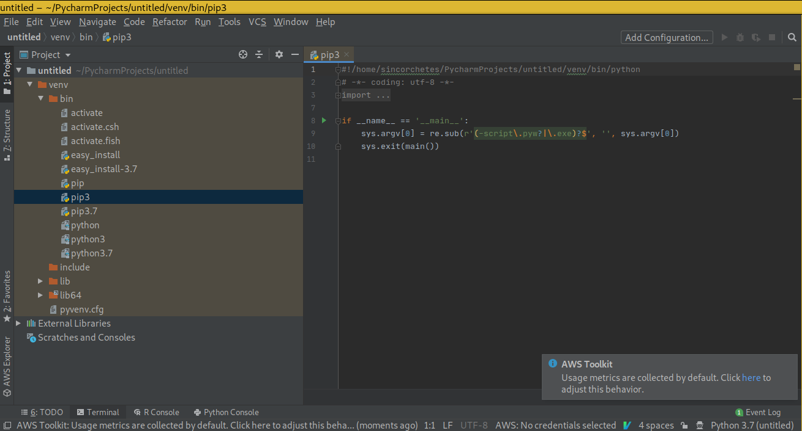

Instalación¶
Python por norma general está instalado por defecto en el 99% de distribuciones de Linux por lo que no te hará falta tener que instalar nada. Sin embargo, hay distribuciones que a pesar de que Python 2.* se encuentre obsoleto, la mayor parte de librerías y programas que contienen en su sistema operativo hacen uso de la versión 2.7.* que fue la última en mantenerse. Por lo que, quizás necesites realizar unos pasos adicionales para tener Python 3.* instalado en tu Linux.
Algunas distribuciones pueden ser:
CentOS 6/7
Debian Stable
RHEL 6/7
Gentoo
En FreeBSD y OpenBSD hay que instalarlo con su respectiva paquería, puedes utilizar estas guía oficial de Python para hacerlo
En Windows tenemos dos formas de hacerlo, una es utilizando el subsistema de Linux para Windows haciendo uso de un sistema Linux ejecutándose en un Windows, o bien, la forma oficial que es utilizar el instalador oficial elaborado por la comunidad de Python. Para descarganos el instalador hay que dirigirse a la página de descargas pulsando aquí
Una vez descargado, ejecutamos el instalador y seguimos los pasos como tenemos en las imágenes:
Desmarcamos la opción de instalar para todos y marcamos la opción de añadir a la variable PATH, después «Install Now»:

Vemos como se está instalando:

En este paso, deshabilitamos el path lenght limit:

Y desde PowerShell podemos abrir el ejecutable directamente, veremos la versión que estamos utilizando.
IDEs¶
Hay una gran selección de IDEs bastante buenos que podemos utilizar para aprender, hay tanto de pago, gratuitos, libres y no libres… hay un gran abanico para decidir.
IDLE¶
Un IDE que viene integrado con Python (incluyendo en la instalación de Windows en la que hemos hablado más arriba). Permite ejecutar código directamente, depurarlo y tiene un pequeño editor dónde realizar nuestras modificaciones.

Spyder¶
Es un IDE gratuito y libre que contiene multitud de funciones desde depuración, ejecución y redacción de un archivo en Python todo en una misma ventana. Pues ver más info en su páginas web
Jupyter Notebook¶
Es un servidor web que mediante estilos, javascripts y html5 genera un IDE web con el que poder interactuar, al igual que todos permite depurar, crear archivos, navegar por los directorios del sistema operativo…etc Jupyter
Navegando por los directorios del SO desde su interfaz web

Ejecutando comandos de Python en un archivo nuevo
Abriendo una sesión de SO desde Web

Jupyter labs¶
Basado en Jupyter Notebook y Arquitecture contiene más características, como especificar qué versión de Python lanzar, ejecutar una consola directamente de Python o de SO… Más info en Jupiter

Anaconda¶
Anaconda es un software que contiene todo lo necesario para desplegar un entorno de desarrollo de Python tanto en Linux como en Windows. No solo contiene el intérprete, si no que también tienen varios editores que puedes seleccionar desde su panel «Anaconda Navitator». Más info en su página

PyCharm¶
PyCharm es un software elaborado por la empresa JetBrains, es bastante conocido porque tiene un potente interfaz de desarrollo que permite hacer carga de espacios de nombres, módulos, referencias… y es muy potente. Aunque es de pago, si eres estudiante y tienes la ISIC puedes obtener una licencia anual gratuita para todos los productos de la empresa como DataGrid, PhpStorm, CLion… y poder hacer tus desarrollos (siempre personales y no comerciales) con él. No obstante, si no eres estudiante, y no quieres comprar la licencia, puedes hacer uso de la versión comunitaria. Más info
Editores¶
Si no te gusta utilizar un IDE, siempre puedes hacer uso de editores como vim, Sublime Text, VS Code con sus correspondientes plugins.